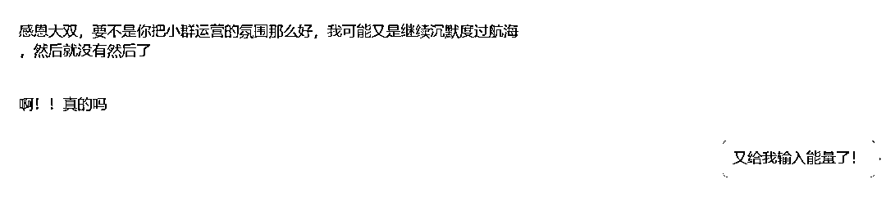
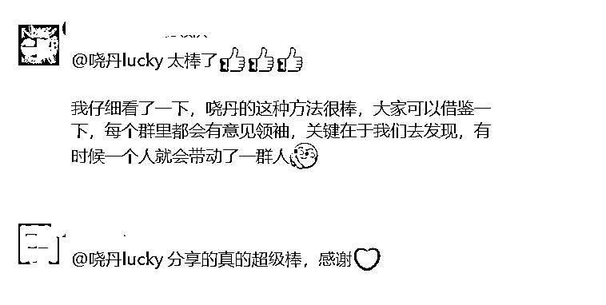
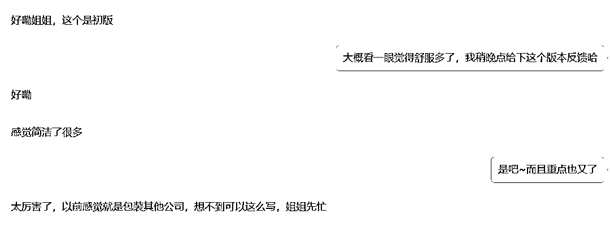
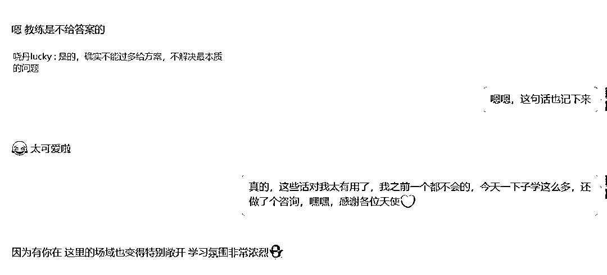
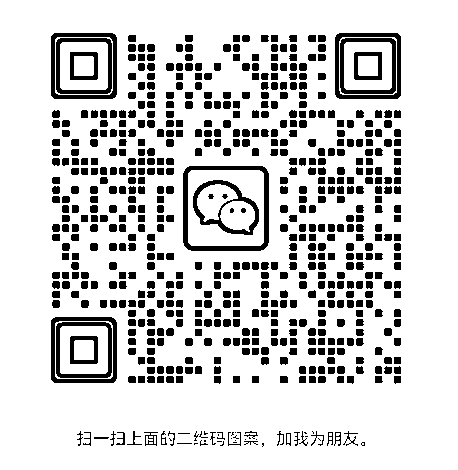

来源：https://ikaff6c84v.feishu.cn/docx/QjUHdUVF2oppZMxo1XEcAoAqnxf
00 读前声明
没有一蹴而就的成功，忽略过去经验，个人长处去谈成果都是耍流氓，你的天赋价值百万！
自律是个伪命题，了解自己才能更好的自我管理无论过去还是现在，我做的事情都踩在擅长点上，所以才一击即中
我是一个互联网公司的运营经理，工作时长4年半~
最初是写商业转化文案的，后面写的挺好，开始带组带人。遇到好的机遇，后面带了社群、公众号等等几个项目组，成了私域小负责人。
过程中因为业务需要，自己从0-1搭建了很多业务流程体系，帮助团队运转规范化。
人多了以后，被动开启演讲技能，业务培训&业务分享也获得几次最高分及满分。
管理上带出过一些优秀的项目负责人和业务组长，沉淀下诸多实用方法论。过程中各种曲折、付出、心酸不多赘述。
如果你问感觉干挺好的，为啥想搞副业？
互联网下行，业务团队多变，招聘鱼龙混杂，突然发现靠实干天花板太低了！
做做“职场情商”于我而言难上加难。
业务上卷没结果，太较真常惹老板不快，直接上级根本不管业务但反而多被点赞，内心苦闷。团队内部，小孩们有自己想法，对业务没什么敬畏心，一片期待对方成长的好心也可能被埋怨。
沉淀较多，有分享欲，想要做事，于是转了个场
开始想做个人IP，觉得自己沟通、表达、表现能力不错，合伙人和我家距离太远，合作一次耗时较多，最终放弃；
二度做IP，和生财的网友深度沟通一次，写了些规划案，没有后续了4月入生财，航海实战2次，中途想做小红书了，付费1次规划1次第一次航海，主题为【朋友圈IP文案】，21天全勤打卡，个人分数排名冲进整个活动前10。
成果→打造自己的简历精修产品，实现变现
第二次航海，也就是9月这次，竞选了志愿者，小组排名冲进前5，领队所带志愿者下的第1名，个人前10。
成果→完成了自我定位，咨询师，正式咨询2单，变现360+，十一假期已预约咨询6单。
这些成果，让我的价值在职场外被看到，一定程度上激发我的成就感和自信心。
秉承目标，一次最多报两个活动，死磕，认真完成每次作业，务必有结果
日志被精选4次，航海成果写入日志被标记好事4次，日志被精选+好事5次个人优势航海大群内（400+人）日志被推荐6次（每次推荐6人）打卡+10分，被精选/好事再+10分，被精选+好事+20分，因此多得了180分。
航海开始前做了盖洛普优势测试，测试结果也很惊喜，我的突出才干基本都是优势了，有带来成果。
小插曲是我的测评结果出来一看top1才干是个别，喜欢洞察人，我可沮丧了，寻思这有啥用，关键执行力总体还排名倒数第一，是个懒蛋。
后面，我可太喜欢这个优势才干了，包括我的沟通、个别、关联、战略、伯乐，每一个靠前才干！写航海日志触发了我写作的老本行，写的过程中又会激发我的思维才干。
因为目标比较明确，纯交作业心里会不爽，所以写一次倒逼自己思考一次，副业定位到底是啥。所以人生没有白走的路，每一步都算数！
虽然带社群运营项目组，但实操还是第一次，充分运用了自己“个别”“沟通”“关联”才干。社群初期（活跃期）沟通来识别出可能的意见领袖（爱沟通的人），并且复述提炼不同群友技能点，运用关联，让大家自动建联。所以，后来拉了优势觉察小群，影响力小群，甚至有两位群友已经合作规划变现了。
过程中注意节奏，初期在群里提醒大家完成打卡作业，后期疲软再逐一提醒，避免大家有依赖心，把任务完成寄托在我身上。
同时真诚的给每个人点赞，被精选，被推荐日志的群友，在群内给大家答疑的热心群友等等，如果有人在群里发言，逐一引用，细心关照、尊重大家感受。

社群是否活跃，本质在于社群定位和价值感。我作为志愿者运营的通知群本身价值不大，关联度低好像松散联盟。
但是！群里的每个人都是宝藏，沟通起来价值就来了。群内提问答疑活跃目的也有了，彼此互相鼓励，温暖的气场更吸引大家。后来也收到了一些好评，还被领队邀请在小群内分享了两句，嘿嘿，蛮开心滴。

具体操作和底层逻辑就是用户运营，如果感兴趣，私聊我，聊两句。
很多时候一个团队的风水好，做成事的人难免会更多，这次航海我最深刻的体验就是，遇到一个好领队太棒了，全程跟盯，从大到小，清晰又明确，带着这股劲，所有的志愿者也都十分负责，对应的每个船员也都士气满满，实名点赞我的领队闯天下。
说变现就不得不说我这个人的特点，有很强的利他情节，择业希望择善业，变现希望产品真的有意义有价值。想赚钱还矫情，是我，没错！
4月左右我的两个下属离职，找了499简历精修服务，完了发我，感觉改的怎么说，真滴很差劲！（没有辐射同行的意思）我又给改了下~
缘分就是这么起来的，俩人挺开心给我出谋划策，甚至给我推荐海报设计。
一周左右海报就出来了，花200块钱1:1抄来的，形式不重要，简历这我门清，这几年面了没300也有200人了~

后来快速变现，对方评价挺好，但是总觉得没意思，无非就帮对方了解优势+换个包装，他拿到简历面试不慌，但是我热情已经跑光光。
我想做个长期的事，流量买卖，拼获客，不想玩在此之前我有1年半的时间在一个素食店里学习心性成长，一直想有没有一份事业是助人利己的，而且是从心灵上帮到别人，可能是老天听到了
航海让我明白了解自己太重要了，再看自己的优势才干，这不就是天生的咨询师（捂脸自夸）。
工作中叨叨没人听，换个场子，别人付费听我叨叨，岂不是很爽！当时一周的时间看了3、4个产品，认真听完试听，刘津老师的课和我学的个人成长的理念诸多相似，真的在我的心巴上。
我是个营销型人格，翻译下，找到目标，懒惰就没有了冲的停不下来
0912下单课程，每天3-5节课，作业提交2-6份，开始焦虑
0916 觉察到自己焦虑情绪，主动沟通，开始缓下来，听懂为目的，不冲快和作业一些温暖的瞬间，洞察自己的过程中让好友帮我做了下评价，评价好暖心。说我有能量，追求进步.....让我信心满满，更坚定成长自己，照亮他人。
0918开始给身边的人做测试和解译联系，被好友打赏88，隔天学完天赋咨询全部课程
0920开始学习财富关系课程，当天接了个圈友的咨询单，被打赏288，激动的不得了，被认可了服务，且评价超级温暖（不是天赋异禀为了做好准备了10页内容，还咨询了老师，总之决心做好交付）

过程中又觉察到自己的卡点：不敢做朋友圈的营销。于是约了教练对话，发现困难被想的很可怕而已，冲他喵的（感谢教练闯天下，人好声音还那么好听）
0923开启朋友圈日更，至今十一的优势咨询约满，财富关系课程学习ing，幸福指UP咨询师是个自我疗愈的职业，帮助被人解决问题的时候常常顺便解开了自己的心结。
所以前两天上班路上还有感而发【有幸择善业，照亮别人，照见自己】
还有别问我咋平衡工作的，就8-9小时工作，下班及周六日学习拉满~
当然，如果你感兴趣，欢迎来聊
以上，希望各位早日找到心流方向～

作为优秀新学员连麦分享内容
1、 自我介绍
大家好，我是哓丹，真的太太太激动了。
几个关键词，介绍我自己
北漂4年的农村女孩
会写商业文案的私域运营负责人
企业业务、管理分享培训师，有几次获得最高分评价，满分评价
面过200+人的业务面面试官
斜杠探索5个月衍生2个产品，盈利4位数的个体创业者
2、 跟刘津老师链接的经历
那就不得不说下我的职场经历
前2年：风口上，冲起来，机会有，晋升也有
没日没夜从业务骨干到小组长，觉得成长是养料，涨薪上不争，晋升让给下面伙伴也就让了
第3年：风口下，机会多，变动多，内耗大
人员流失，大负责人出走，上司、团队架构总变，开始带15+团队，巨大挑战后有很好成长，后来直属上级再次离职，陷入困局
第4年：乱乱乱
几年时间，公司里面优质人才流失，企业文化稀释，新来的直属上级切断了我往上走的机会，同时能力差，不作为，撒谎，敷衍，媚上人品差，颠覆三观，不是能力强，努力，认真，踏实就能在职场混的好，持续内耗1年，对上管理情绪，尽量配合沟通，对下管理大家预期，为团队伙伴成长负责，即便如此仍大批人员流失，职场这地方吧，也不是公平的地方，白瞎我一片热血。
外部机会看了几家，面试没问题的，但是问问自己还想卷吗？还想勾心斗角，媚上竞争吗？答案是否定的？
机会是上级上面又来了新的上级，我主动约他沟通，讲述我遇到的卡点，要求我做事我的上级少插手，至此，我的整体状态稳定了下来
副业初尝试
时机对，人也对
副业探索衍生出第一个产品，觉察自己搞副业还有点挑剔
心灵成长1年半，坚定利他，认真
昕酱引荐，一周时间的学习对比，岑岑咨询，津姐的对话
听课感受，很爽，7、8天时间看了2大节课程并且完成课程内容记录和作业打卡，治好了我的赚钱挑剔症
3、 学习过程的收获
第一阶段：冲，不分日夜
9天学完天赋的课程，
第二阶段：缓，回归初心
突然有一天我发现我开始以看完课程为目标，疯狂听课，记录，打卡，学习乐趣全无，不仅如此写作业也没有感情了，赶紧和老师岑岑沟通，决定放缓脚步
第三阶段：开始接单
广结善缘，参加一个付费社群活动，我当志愿者，核心带着大家一起打卡，过程中一个小伙伴说自己没啥动力做，感觉测试完也不会分析，我就问她愿不愿意试试我学习的咨询。
咨询后她说我对她的帮助很大，给我随喜288，真滴开心，助人利己，既要又要就是我想要的
第四阶段：调整平衡
短跑选手决定做个长期主义
4、 咨询师个人IP的思考
单点突破，多点开花
5、最后想跟大家说一些什么
执行要狠，心态要佛